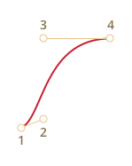
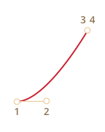
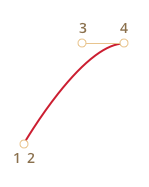
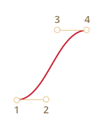

Все современные браузеры, кроме IE9- поддерживают CSS transitions и CSS animations, которые позволяют реализовать анимацию средствами CSS, без привлечения JavaScript.
Однако, как мы увидим далее, для более тонкого контроля анимации JavaScript вовсе не будет лишним.
CSS transitions
Идея проста. Мы указываем, что некоторое свойство будет анимироваться при помощи специальных CSS-правил. Далее, при изменении этого свойства, браузер сам обработает анимацию.
Например, CSS, представленный ниже, 3 секунды анимирует свойство background-color.
.animated {
transition-property: background-color;
transition-duration: 3s;
}Теперь любое изменение фонового цвета будет анимироваться в течение 3х секунд.
При клике на эту кнопку происходит анимация её фона:
<button id="color">Кликни меня</button>
<style>
#color {
transition-property: background-color;
transition-duration: 3s;
}
</style>
<script>
color.onclick = function() {
this.style.backgroundColor = 'red';
}
</script>Есть всего 5 свойств, задающих анимацию:
transition-propertytransition-durationtransition-timing-functiontransition-delay
Далее мы изучим их все, пока лишь заметим, что общее свойство transition может перечислять их все, в порядке: property duration timing-function delay, а также задавать анимацию нескольких свойств сразу.
Например, при клике на эту кнопку анимируются одновременно цвет и размер шрифта:
<button id="growing">Кликни меня</button>
<style>
#growing {
transition: font-size 3s, color 2s;
}
</style>
<script>
growing.onclick = function() {
this.style.fontSize='36px';
this.style.color='red';
}
</script>Далее мы рассмотрим свойства анимации по отдельности.
transition-property
Список свойств, которые будут анимироваться, например: left, margin-left, height, color.
Анимировать можно не все свойства, но многие. Значение all означает «анимировать все свойства».
transition-duration
Продолжительность анимации, задаётся в формате CSS time, то есть в секундах s или ms.
transition-delay
Задержка до анимации. Например, если transition-delay: 1s, то анимация начнётся через 1 секунду после смены свойства.
Возможны отрицательные значения, при этом анимация начнётся с середины.
Например, вот анимация цифр от 0 до 9:
stripe.onclick = function() {
stripe.classList.add('animate');
};#digit {
width: .5em;
overflow: hidden;
font: 32px "Courier New", monospace;
}
#stripe.animate {
margin-left: -174px;
transition-property: margin-left;
transition-duration: 9s;
transition-timing-function: linear;
}<!doctype html>
<html>
<head>
<meta charset="UTF-8">
<link rel="stylesheet" href="style.css">
</head>
<body>
<div id="digit"><span id="stripe">0123456789</span></div>
<script src="script.js"></script>
</body>
</html>Она осуществляется сменой margin-left у элемента с цифрами, примерно так:
#stripe.animate {
margin-left: -174px;
transition-property: margin-left;
transition-duration: 9s;
}В примере выше JavaScript просто добавляет элементу класс – и анимация стартует:
digit.classList.add('animate');Можно стартовать её «с середины», с нужной цифры, например соответствующей текущей секунде, при помощи отрицательного transition-delay.
В примере ниже при клике на цифру она начнёт двигаться с текущей секунды:
stripe.onclick = function() {
var sec = new Date().getSeconds() % 10;
stripe.style.transitionDelay = '-' + sec + 's';
stripe.classList.add('animate');
};#digit {
width: .5em;
overflow: hidden;
font: 32px "Courier New", monospace;
}
#stripe.animate {
margin-left: -174px;
transition-property: margin-left;
transition-duration: 9s;
transition-timing-function: linear;
}<!doctype html>
<html>
<head>
<meta charset="UTF-8">
<link rel="stylesheet" href="style.css">
</head>
<body>
<div id="digit"><span id="stripe">0123456789</span></div>
<script src="script.js"></script>
</body>
</html>В JavaScript это делается дополнительной строкой:
stripe.onclick = function() {
var sec = new Date().getSeconds() % 10;
// например, значение -3s начнёт анимацию с 3-й секунды
stripe.style.transitionDelay = '-' + sec + 's';
stripe.classList.add('animate');
};transition-timing-function
Временнáя функция, которая задаёт, как процесс анимации будет распределён во времени, например начнётся ли анимация медленно, чтобы потом ускориться или наоборот.
Самое сложное, но при небольшом изучении – вполне очевидное свойство.
У него есть два основных вида значения: кривая Безье и по шагам. Начнём с первого.
Кривая Безье
В качестве временной функции можно выбрать любую кривую Безье с 4 опорными точками, удовлетворяющую условиям:
- Начальная точка
(0,0). - Конечная точка
(1,1). - Для промежуточных точек значения
xдолжны быть в интервале0..1,y– любыми.
Синтаксис для задания кривой Безье в CSS: cubic-bezier(x2, y2, x3, y3). В нём указываются координаты только двух точек: второй и третьей, так как первая и последняя фиксированы.
Она указывает, как быстро развивается процесс анимации во времени.
- По оси
xидёт время:0– начальный момент,1– конец времениtransition-duration. - По оси
y– завершённость процесса:0– начальное значение анимируемого свойства,1– конечное.
Самый простой вариант – это когда процесс развивается равномерно, «линейно» по времени. Это можно задать кривой Безье cubic-bezier(0, 0, 1, 1).
График этой «кривой» таков:
…Как видно, это просто прямая. По мере того, как проходит время x, завершённость анимации y равномерно приближается от 0 к 1.
Поезд в примере ниже с постоянной скоростью «едет» слева направо, используя такую временную функцию:
.train {
position: relative;
cursor: pointer;
width: 177px;
height: 160px;
left: 0;
transition: left 5s cubic-bezier(0, 0, 1, 1);
}<!doctype html>
<html>
<head>
<meta charset="UTF-8">
<link rel="stylesheet" href="style.css">
</head>
<body>
<img class="train" src="https://js.cx/clipart/train.gif" onclick="this.style.left='450px'">
</body>
</html>CSS для анимации:
.train {
left: 0;
transition: left 5s cubic-bezier(0, 0, 1, 1);
/* JavaScript ставит значение left: 450px */
}Как нам показать, что поезд тормозит?
Для этого используем кривую Безье: cubic-bezier(0.0, 0.5, 0.5 ,1.0).
График этой кривой:
Как видно, процесс вначале развивается быстро – кривая резко идёт вверх, а затем всё медленнее, медленнее.
Вы можете увидеть эту временную функцию в действии, кликнув на поезд:
.train {
position: relative;
cursor: pointer;
width: 177px;
height: 160px;
left: 0px;
transition: left 5s cubic-bezier(0.0, 0.5, 0.5, 1.0);
}<!doctype html>
<html>
<head>
<meta charset="UTF-8">
<link rel="stylesheet" href="style.css">
</head>
<body>
<img class="train" src="https://js.cx/clipart/train.gif" onclick="this.style.left='450px'">
</body>
</html>CSS для анимации:
.train {
left: 0;
transition: left 5s cubic-bezier(0, .5, .5, 1);
/* JavaScript ставит значение left: 450px */
}Существует несколько стандартных обозначений кривых: linear, ease, ease-in, ease-out и ease-in-out.
Значение linear – это прямая, мы её уже видели.
Остальные кривые являются короткой записью следующих cubic-bezier:
ease* |
ease-in |
ease-out |
ease-in-out |
|---|---|---|---|
(0.25, 0.1, 0.25, 1.0) |
(0.42, 0, 1.0, 1.0) |
(0, 0, 0.58, 1.0) |
(0.42, 0, 0.58, 1.0) |

|

|

|

|
* – По умолчанию, если никакой временной функции не указано, используется ease.
Кривая Безье может заставить анимацию «выпрыгивать» за пределы диапазона.
Допустимо указывать для кривой Безье как отрицательные y, так и сколь угодно большие. При этом кривая Безье будет также по y выскакивать за пределы диапазона 0..1, представляющего собой начало-конец значения.
В примере ниже CSS-код анимации таков:
.train {
left: 100px;
transition: left 5s cubic-bezier(.5, -1, .5, 2);
/* JavaScript поменяет left на 400px */
}Свойство left должно меняться от 100px до 400px.
Однако, если кликнуть на поезд, то мы увидим, что:
- Он едет сначала назад, то есть
leftстановится меньше100px. - Затем вперёд, причём выезжает за назначенные
400px. - А затем опять назад – до
400px.
.train {
position: relative;
cursor: pointer;
width: 177px;
height: 160px;
left: 100px;
transition: left 5s cubic-bezier(.5, -1, .5, 2);
}<!doctype html>
<html>
<head>
<meta charset="UTF-8">
<link rel="stylesheet" href="style.css">
</head>
<body>
<img class="train" src="https://js.cx/clipart/train.gif" onclick="this.style.left='400px'">
</body>
</html>Почему так происходит – отлично видно, если взглянуть на кривую Безье с указанными опорными точками:
Мы вынесли координату y для второй опорной точки на 1 ниже нуля, а для третьей опорной точки – на 1 выше единицы, поэтому и кривая вышла за границы «обычного» квадрата. Её значения по y вышли из стандартного диапазона 0..1.
Как мы помним, значению y = 0 соответствует «нулевое» положение анимации, а y = 1 – конечное. Получается, что значения y<0 двинули поезд назад, меньше исходного left, а значения y>1 – больше итогового left.
Это, конечно, «мягкий» вариант. Если поставить значения y порядка -99, 99, то поезд будет куда более сильно выпрыгивать за диапазон.
Итак, кривая Безье позволяет задавать «плавное»" течение анимации. Подобрать кривую Безье вручную можно на сайте http://cubic-bezier.com/.
Шаги steps
Временная функция steps(количество шагов[, start/end]) позволяет разбить анимацию на чёткое количество шагов.
Проще всего это увидеть на примере. Выше мы видели плавную анимацию цифр от 0 до 9 при помощи смены margin-left у элемента, содержащего 0123456789.
Чтобы цифры сдвигались не плавно, а шли чётко и раздельно, одна за другой – мы разобьём анимацию на 9 шагов:
#stripe.animate {
margin-left: -174px;
transition: margin-left 9s steps(9, start);
}В действии step(9, start):
#digit {
width: .5em;
overflow: hidden;
font: 32px "Courier New", monospace;
}
#stripe.animate {
margin-left: -174px;
transition-property: margin-left;
transition-duration: 9s;
transition-timing-function: steps(9, start);
}<!DOCTYPE html>
<html>
<head>
<meta charset="utf-8">
<link rel="stylesheet" href="style.css">
</head>
<body>
<div id="digit"><span id="stripe">0123456789</span></div>
<script>
digit.onclick = function() {
stripe.classList.add('animate');
}
</script>
</body>
</html>Первый аргумент steps – количество шагов, то есть изменение margin-left разделить на 9 частей, получается примерно по 19px. На то же количество частей делится и временной интервал, то есть по 1s.
start – означает, что при начале анимации нужно сразу применить первое изменение. Это проявляется тем, что при нажатии на цифру она меняется на 1 (первое изменение margin-left) мгновенно, а затем в начале каждой следующей секунды.
То есть, процесс развивается так:
0s–-19px(первое изменение в начале 1-й секунды, сразу при нажатии)1s–-38px- …
8s–-174px- (на протяжении последней секунды видно окончательное значение).
Альтернативное значение end означало бы, что изменения нужно применять не в начале, а в конце каждой секунды, то есть так:
0s–01s–-19px(первое изменение в конце 1-й секунды)2s–-38px- …
9s–-174px
В действии step(9, end):
#digit {
width: .5em;
overflow: hidden;
font: 32px "Courier New", monospace;
}
#stripe.animate {
margin-left: -174px;
transition-property: margin-left;
transition-duration: 9s;
transition-timing-function: steps(9, end);
}<!DOCTYPE html>
<html>
<head>
<meta charset="utf-8">
<link rel="stylesheet" href="style.css">
</head>
<body>
<div id="digit"><span id="stripe">0123456789</span></div>
<script>
digit.onclick = function() {
stripe.classList.add('animate');
}
</script>
</body>
</html>Также есть сокращённые значения:
step-start– то же, чтоsteps(1, start), то есть завершить анимацию в 1 шаг сразу.step-end– то же, чтоsteps(1, end), то есть завершить анимацию в 1 шаг по истеченииtransition-duration.
Такие значения востребованы редко, так как это даже и не анимация почти, но тоже бывают полезны.
Событие transitionend
На конец CSS-анимации можно повесить обработчик на событие transitionend.
Это широко используется, чтобы после анимации сделать какое-то действие или объединить несколько анимаций в одну.
Например, лодочка в примере ниже при клике начинает плавать туда-обратно, с каждым разом уплывая всё дальше вправо:
Её анимация осуществляется функцией go, которая перезапускается по окончании, с переворотом через CSS:
boat.onclick = function() {
//...
var times = 1;
function go() {
if (times % 2) {
// плывём вправо
boat.classList.remove('back');
boat.style.marginLeft = 100 * times + 200 + 'px';
} else {
// плывём влево
boat.classList.add('back');
boat.style.marginLeft = 100 * times - 200 + 'px';
}
}
go();
boat.addEventListener('transitionend', function() {
times++;
go();
});
};Объект события transitionend содержит специфические свойства:
propertyName- Свойство, анимация которого завершилась.
elapsedTime- Время (в секундах), которое заняла анимация, без учета
transition-delay.
Свойство propertyName может быть полезно при одновременной анимации нескольких свойств. Каждое свойство даст своё событие, и можно решить, что с ним делать дальше.
CSS animations
Более сложные анимации делаются объединением простых при помощи CSS-правила @keyframes.
В нём задаётся «имя» анимации и правила: что, откуда и куда анимировать. Затем при помощи свойства animation: имя параметры эта анимация подключается к элементу, задаётся время анимации и дополнительные параметры, как её применять.
Пример с пояснениями в комментарии:
<div class="progress"></div>
<style>
@keyframes go-left-right { /* назовём анимацию: "go-left-right" */
from {
left: 0px; /* от: left: 0px */
}
to {
left: calc(100% - 50px); /* до: left: 100%-50px */
}
}
.progress {
/* применить анимацию go-left-right */
/* продолжительность 3s */
/* количество раз: бесконечное (infinite) */
/* менять направление анимации каждый раз (alternate) */
animation: go-left-right 3s infinite alternate;
position: relative;
border: 2px solid green;
width: 50px;
height: 20px;
background: lime;
}
</style>Этот стандарт пока в черновике, поэтому в Chrome, Safari, Opera нужен префикс -webkit.
Статей про CSS animations достаточно много, посмотрите, например:
- Статья про CSS Animation.
- Пример бесконечной подпрыгивающей анимации на CSS Animation и кривых Безье.
Итого
CSS-анимации позволяют плавно или не очень менять одно или несколько свойств.
Альтернатива им – плавное изменение значений свойств через JavaScript, мы рассмотрим подробности далее.
Ограничения и достоинства CSS-анимаций по сравнению с JavaScript:
- Временная функция может быть задана кривой Безье или через шаги. Более сложные анимации, состоящие из нескольких кривых, реализуются их комбинацией при помощи CSS animations, но JavaScript-функции всегда гибче.
- CSS-анимации касаются только свойств, а в JavaScript можно делать всё, что угодно, удалять элементы, создавать новые.
- Отсутствует поддержка в IE9-
- Простые вещи делаются просто.
- «Легче» для процессора, чем анимации JavaScript, лучше используется графический ускоритель. Это очень важно для мобильных устройств.
Подавляющее большинство анимаций делается через CSS.
При этом JavaScript запускает их начало – как правило, добавлением класса, в котором задано новое свойство, и может отследить окончание через событие transitionend.
Комментарии
<code>, для нескольких строк кода — тег<pre>, если больше 10 строк — ссылку на песочницу (plnkr, JSBin, codepen…)